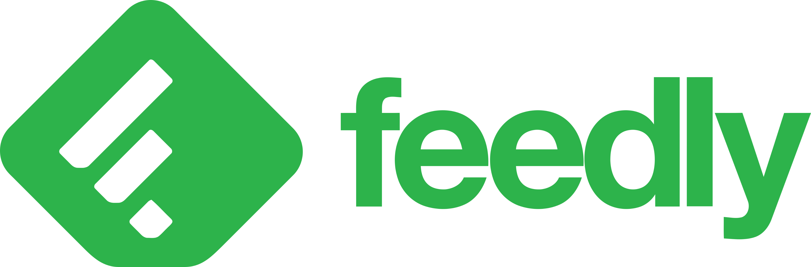
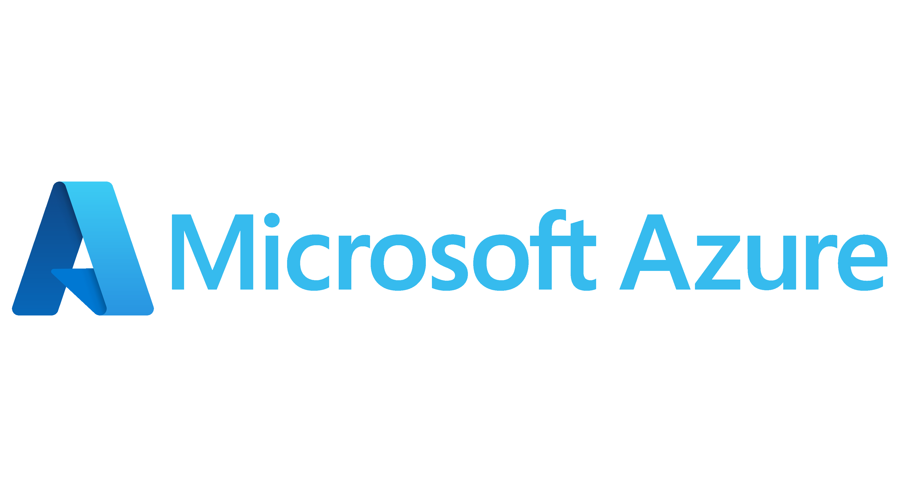

La veille technologique représente une démarche stratégique visant à recueillir, stocker et analyser de manière continue et systématique les informations relatives à un produit ou à un processus donné. Cette pratique requiert une surveillance constante des développements et des avancées dans un domaine d'intérêt spécifique.
L'objectif premier de la veille technologique est de demeurer informé des dernières avancées, innovations et défis en matière de technologie, ainsi que des évolutions sectorielles pertinentes. En s'appuyant sur une analyse pointue des données recueillies, cette démarche vise à maintenir un avantage compétitif en étant à la pointe des connaissances et des pratiques dans son domaine d'activité.
En effet, la veille technologique permet non seulement d'identifier les nouvelles opportunités, mais également de détecter les risques potentiels, notamment en matière de sécurité, ainsi que les tendances émergentes. En se tenant au courant des développements récents, les organisations peuvent anticiper les évolutions du marché et adapter leur stratégie en conséquence.
Ainsi, la veille technologique constitue un pilier essentiel de la gestion de l'innovation et de la compétitivité. En investissant dans cette pratique, les entreprises peuvent renforcer leur position sur le marché en tirant parti des avancées technologiques pour améliorer leurs produits, leurs processus et leur performance globale.
Pour mener à bien ma veille technologique, j'utilise une combinaison d'outils et de techniques afin de rester informé des dernières tendances et développements. Parmi ces outils, Feedly joue un rôle central dans mon processus. Feedly est une plateforme de gestion de flux RSS qui me permet de suivre facilement les publications et les mises à jour de mes sources d'information préférées. Cela me permet de rester au courant des dernières actualités dans mon domaine d'expertise tel que le cloud computing.
En plus de Feedly, j'utilise également Google pour effectuer mes propres recherches approfondies. Cette approche me permet d'explorer en profondeur les sujets qui m'intéressent et de découvrir des informations pertinentes qui pourraient ne pas être couvertes par mes sources habituelles.

Par ailleurs, je suis engagé dans un processus continu d'apprentissage et de développement de compétences. Actuellement, je travaille à l'obtention de la certification Azure (AZ-900), ce qui me permet d'acquérir des connaissances approfondies dans le domaine du cloud computing.
Cette expertise me permet de mieux comprendre les tendances émergentes dans le domaine de l'informatique en nuage et d'anticiper les besoins futurs dans ce domaine.En combinant l'utilisation d'outils avancés tels que Feedly, des recherches personnalisées sur Google et une formation continue dans des technologies de pointe telles que Azure, je m'efforce d'offrir des solutions innovantes et de rester à l'avant-garde dans mon domaine d'expertise.
En utilisant ces outils, j'ai pu filtrer les informations et les synthétiser, comme présenté ci-dessous.
Le cloud computing, ou informatique en nuage, est un modèle qui permet l'accès à des ressources informatiques (comme des serveurs, du stockage, des bases de données, des réseaux, des logiciels, etc.) via Internet, à la demande et selon les besoins, sans nécessiter une infrastructure informatique locale ou des connaissances avancées en gestion des systèmes.
En d'autres termes, au lieu d'avoir des serveurs physiques ou des logiciels installés localement, les utilisateurs peuvent accéder à ces ressources à distance, généralement via un abonnement payant à un fournisseur de services cloud. Ces fournisseurs de services cloud gèrent et maintiennent l'infrastructure sous-jacente, ce qui permet aux entreprises et aux individus de se concentrer sur l'utilisation des services plutôt que sur leur gestion technique.
Le cloud computing propose trois modèles de service principaux, chacun répondant à des besoins spécifiques des utilisateurs et des entreprises. Ces modèles, connus sous le nom d'Infrastructure as a Service (IaaS), Platform as a Service (PaaS) et Software as a Service (SaaS), offrent respectivement des niveaux d'abstraction et de contrôle variés sur les ressources informatiques et les applications hébergées dans le cloud. Cette diversité permet aux organisations de choisir le modèle qui correspond le mieux à leurs exigences en matière de développement, de déploiement et de gestion des applications et des services informatiques.
Le Software as a Service (SaaS) est un modèle de distribution de logiciels où les applications sont hébergées sur des serveurs cloud et accessibles via Internet. Les utilisateurs peuvent accéder aux logiciels à partir de n'importe quel appareil connecté, sans avoir besoin de les installer localement. Les fournisseurs de services SaaS gèrent l'infrastructure, la maintenance et les mises à jour des logiciels, offrant ainsi aux utilisateurs des solutions logicielles prêtes à l'emploi, souvent via un abonnement payant, et leur permettant de se concentrer sur leur utilisation plutôt que sur leur gestion technique. Des exemples de SaaS populaires incluent des applications comme Google Workspace, Microsoft Office 365, Salesforce, Dropbox, et bien d'autres.
L'Infrastructure as a Service (IaaS) est un modèle de cloud computing où les fournisseurs de services mettent à disposition des ressources informatiques virtualisées, telles que des serveurs, du stockage et des réseaux, via Internet. Les utilisateurs peuvent louer ces ressources à la demande, en payant uniquement pour ce qu'ils utilisent, plutôt que d'investir dans une infrastructure physique coûteuse. Les fournisseurs de services IaaS gèrent l'infrastructure sous-jacente, tandis que les utilisateurs ont un contrôle total sur les systèmes d'exploitation, les applications et les données hébergées sur ces ressources. Des exemples de fournisseurs de services IaaS incluent Amazon Web Services (AWS), Microsoft Azure, Google Cloud Platform (GCP), et d'autres.
Le Platform as a Service (PaaS) est un modèle de cloud computing où les fournisseurs de services proposent une plateforme complète pour le développement, le déploiement et la gestion d'applications, sans nécessiter de gestion de l'infrastructure sous-jacente. Les utilisateurs ont accès à des outils de développement, des environnements d'exécution, des bases de données et d'autres services middleware via Internet, ce qui leur permet de créer et de déployer des applications plus rapidement et avec moins d'efforts. Les fournisseurs de services PaaS gèrent l'infrastructure, les systèmes d'exploitation, les mises à jour et la maintenance, permettant aux développeurs de se concentrer sur l'écriture de code et sur l'innovation. Des exemples de PaaS incluent Microsoft Azure App Service, Google App Engine, Heroku, et d'autres.
Le cloud computing présente plusieurs avantages, notamment pour les entreprises. Parmi eux figurent la flexibilité et la scalabilité, car les ressources peuvent être rapidement adaptées aux besoins changeants sans nécessiter d'investissements importants en infrastructure. Il offre également une réduction des coûts, car les entreprises n'ont pas besoin d'acheter et de maintenir une infrastructure informatique locale coûteuse, et peuvent opter pour un modèle de paiement à l'usage. De plus, le cloud computing facilite l'accès à des technologies avancées telles que l'intelligence artificielle, l'analyse de données et la gestion des Big Data, permettant aux entreprises de rester compétitives dans un environnement en évolution rapide.
Cependant, le cloud computing présente également des inconvénients. En termes de sécurité, les entreprises doivent confier la protection de leurs données sensibles à des tiers, soulevant des préoccupations en matière de confidentialité et de conformité. De plus, la dépendance aux fournisseurs de services cloud peut entraîner des problèmes de disponibilité et de performance en cas de panne. Enfin, la migration vers le cloud peut être complexe et nécessiter des investissements importants en temps et en ressources. En résumé, bien que le cloud computing offre de nombreux avantages, il est essentiel de peser les avantages par rapport aux inconvénients et de mettre en œuvre des stratégies pour atténuer les risques.
Ils définissent la manière dont les ressources cloud sont provisionnées, déployées et gérées.
Dans ce modèle, les services cloud sont fournis par des fournisseurs tiers via Internet et sont accessibles à tout utilisateur ou organisation qui souhaite les utiliser. Les ressources cloud, telles que les serveurs virtuels, le stockage et les applications, sont partagées entre plusieurs clients, ce qui permet une évolutivité et une économie d'échelle. Les exemples de fournisseurs de cloud public comprennent Amazon Web Services (AWS), Microsoft Azure et Google Cloud Platform (GCP).
Un cloud privé est dédié à une seule organisation et est généralement géré sur site ou par un tiers. Les ressources cloud dans un cloud privé sont utilisées exclusivement par cette organisation, offrant un plus grand contrôle sur la sécurité, la conformité et la personnalisation. Les entreprises optent souvent pour un cloud privé pour des raisons de confidentialité des données, de conformité réglementaire ou de performance des applications.
Le cloud communautaire est partagé entre plusieurs organisations qui ont des intérêts ou des besoins communs, tels que des exigences de conformité ou des objectifs métier similaires. Ce modèle permet aux organisations de partager les coûts et les ressources tout en maintenant un certain niveau d'isolement et de sécurité entre les communautés d'utilisateurs. Par exemple, un cloud communautaire peut être utilisé par plusieurs organisations du secteur de la santé pour stocker et partager des données médicales conformément aux réglementations.
Le cloud hybride combine des environnements cloud publics et privés, ainsi que des ressources sur site, permettant aux entreprises de déplacer des charges de travail et des données entre différents environnements selon les besoins. Cette approche offre une plus grande flexibilité et évolutivité, tout en permettant aux organisations de conserver le contrôle sur certaines ressources sensibles ou critiques sur site. Le cloud hybride est de plus en plus populaire car il permet aux entreprises de tirer parti des avantages du cloud public tout en répondant aux exigences spécifiques du cloud privé.
Amazon Web Services
Microsoft Azure
Google Cloud Platform
IBM Cloud
Oracle Cloud
Alibaba Cloud
Salesforce Cloud
VMware Cloud
Le cloud computing a connu une évolution remarquable au fil des années, passant d'une technologie émergente à un élément essentiel de l'infrastructure informatique moderne. Initialement conçu pour offrir un stockage et une puissance de calcul flexibles via Internet, le cloud a rapidement évolué pour englober une gamme étendue de services, y compris l'IA, l'analyse de données avancée et la gestion des ressources. Son avenir prometteur repose sur une expansion continue, avec l'émergence de nouveaux modèles tels que le cloud hybride et multi-cloud, offrant une plus grande agilité et résilience. Les prochaines avancées technologiques pourraient inclure une intégration plus étroite de l'IA pour l'automatisation des tâches, une sécurité renforcée grâce à la confidentialité homomorphique et une prise en charge accrue des applications décentralisées grâce à la technologie de la blockchain.
En conclusion, le cloud computing représente une évolution majeure dans le domaine des systèmes informatiques, offrant des avantages significatifs tels que la flexibilité, la scalabilité et l'accès à des technologies de pointe. Son adoption croissante par les entreprises témoigne de sa valeur en tant que solution efficace pour répondre aux besoins informatiques modernes. Cependant, pour que cette transition soit pleinement réalisée, il est impératif de résoudre les préoccupations en matière de sécurité, notamment en ce qui concerne le piratage et l'espionnage. En surmontant ces défis, le cloud computing pourrait devenir une norme incontournable pour les organisations de toutes tailles, offrant des économies de coûts substantielles et contribuant à une utilisation plus efficace des ressources informatiques, tout en respectant les impératifs environnementaux.